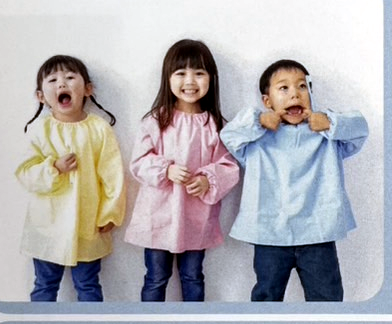
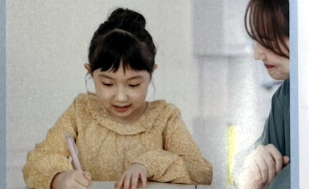

CAUSEなぜ歯ならびが悪くなるの？
歯ならびが悪くなる原因の 95%以上は後天的。毎日の
「クセ」が顎の発育を妨げます。早期に整えることが大切です。

原因の多くは お口まわりのクセ

舌・呼吸・姿勢がつながっています
口呼吸 → 舌が下がる → 顎が育たない、という悪循環に。
鼻呼吸と
正しい舌の位置が健やかな成長のカギです。
お子さんの こんなお悩み ありませんか？
前歯が出ているお口ポカン口呼吸いびきくちゃくちゃ食べ顎が出ている発音異常悪習癖
TREATMENT3ステップの矯正治療
STEP 1
マイオブレス治療
¥286,000（税込）
4〜10歳・0期
口まわりの筋肉を整え、悪いクセを正すトレーニング。
STEP 2
Ⅰ期治療
¥440,000（税込）
7歳〜・混合歯列期
顎の成長をガイドしながら、装置で歯ならびを整える。
STEP 3
Ⅱ期治療
¥946,000（税込）
12歳以降・永久歯列期
永久歯が生え揃ってから、最終的な歯列を仕上げる。
トレーニング内容
3つの「機能」を正しく使えるようにすると、顎が自然に育ち歯ならびが改善します。
治療の流れ
ABOUTマイオブレース治療ってどんな治療？
乱れた歯ならびは、呼吸・舌・口唇・飲み込みの
はたらきが整わないことで起こる“結果”。だから根本から育てます。
飲み込み1日約2000回の嚥下。正しい飲み込みが大切。
根本原因クセという“根本原因”からアプローチする。
お口の機能を整え、正しい成長へ。
噛み合わせ・睡眠・姿勢にも良い変化が期待できます。
めざすのは、自信あふれる笑顔。
鼻呼吸で過ごし、唇は自然に閉じ、舌は正しい位置に。
その「正しい機能」が一生の財産になります。
まずは無料カウンセリングへ
| 医院名 | ［ クリニック名 ］ |
|---|
| 住所 | ［ 住所 ］ |
|---|
| 電話 | ［ 電話番号 ］ |
|---|
| 受付 | 月〜土 9:00〜18:00（日・祝休） |
|---|
※表示価格は税込。別途アクティビティ費等がかかる場合があります。治療効果には個人差があり、
副作用・リスクはカウンセリング時にご説明します。